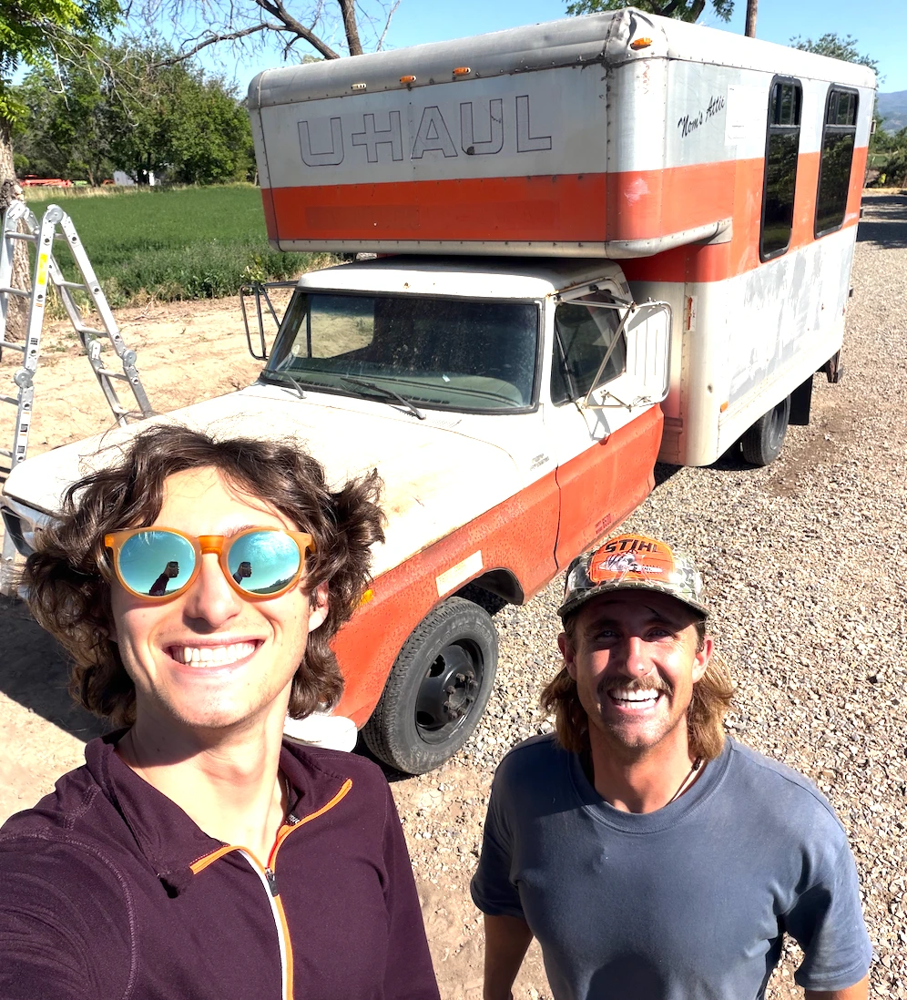

LANGUAGES
- Python
- TypeScript
- JavaScript
- R
- HTML5/CSS3
- Bash
Hello, I'm
Yale University · LLM Research · Builder
I'm a student at Yale University working where large language models meet the social sciences: probing and steering model internals to see how well LLMs can stand in for real people on the General Social Survey. Outside the lab I ship small, slightly strange things on the internet: a store that sells literally nothing, a 3D bookshelf, and tools that turn video into text. Off-screen you'll find me by the ocean, around a bonfire, and with friends.
In progress
YALE UNIVERSITY — NEW HAVEN, CT
Summer 2026
GENERAL SOCIAL SURVEY · 2012–2022 WAVES
Summer 2026
EXTENDING KIM, EVANS & SCHEIN (ICLR 2025)
Summer 2026
BUILDING ON "CAN LLMs LIE?"
2026
SMALL BOAT STUDIOS

gpt-4o-transcribe output.